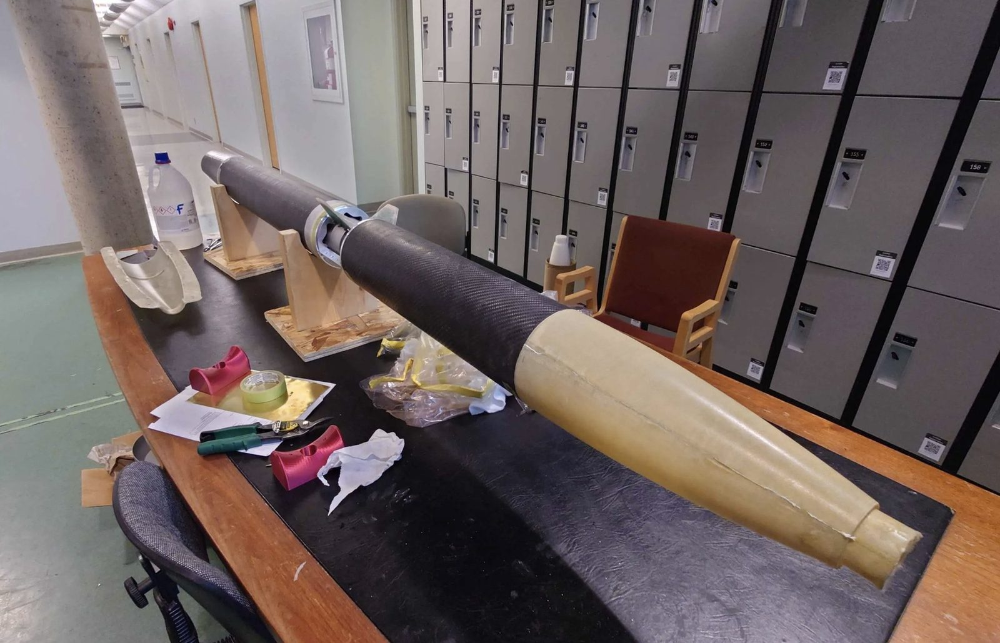
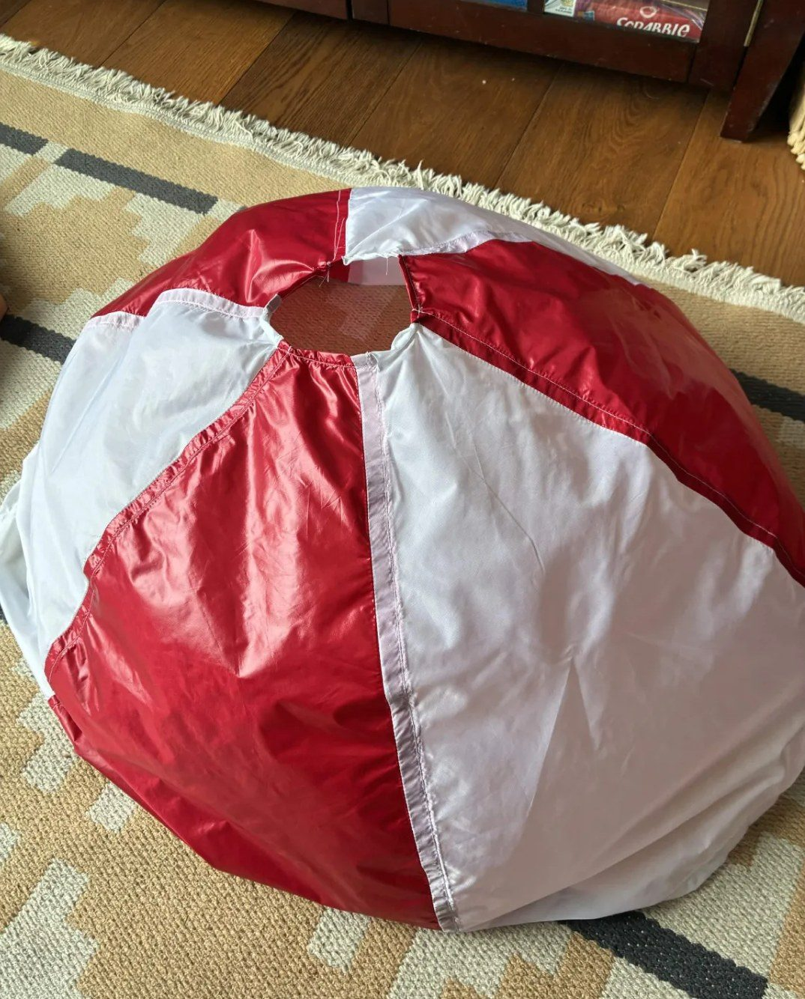
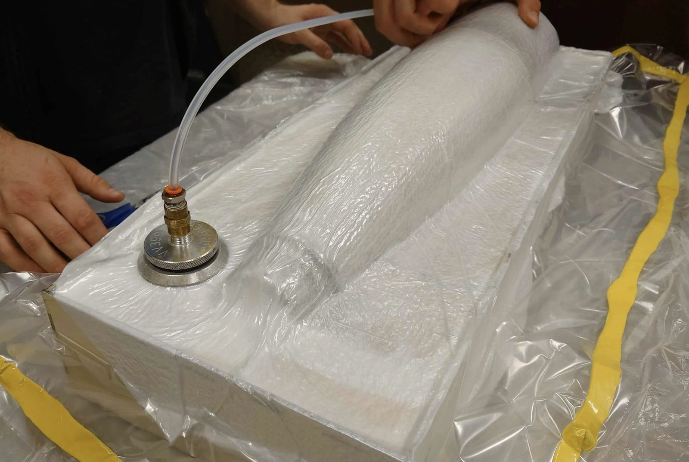
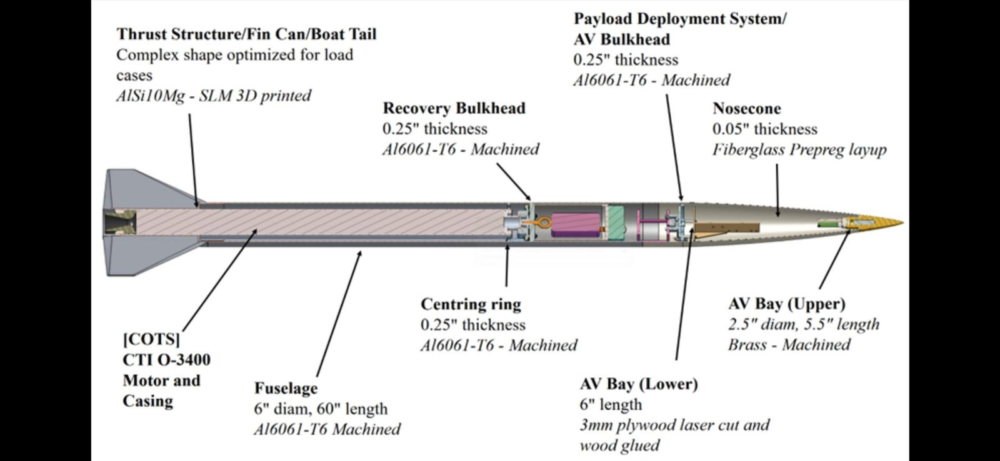
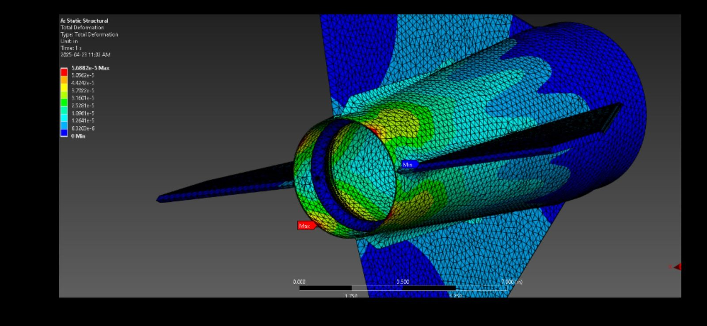
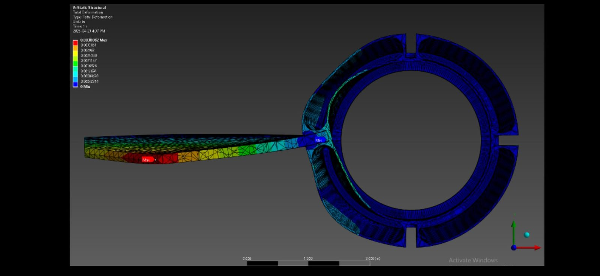

UVic Rocketry Xenia-2: Structures, Fuselage, Parachute, Fuel Comp

xenia-2/own-01.jpgXenia-2 was the second iteration in UVic Rocketry's Xenia-class program. I worked primarily on structures and composites, performing carbon fiber layups for the fuselage and researching techniques to improve consistency.
| Length | 2.5 m (8 ft 2.4 in) |
|---|---|
| Diameter | 13.9 cm (5.5 in) |
| Lift-off mass | 21.0 kg (46.3 lb) |
| Motor | Cesaroni Technologies M2505 |
| Max thrust | 2953 N (664 lbf) |
| Max speed | 1148.4 km/h (Mach 0.93) |
| Apogee | 9,340 ft actual vs 9,593 ft predicted (2.6% deviation) |
Composites
Composite work rewards process discipline more than anything else, since a layup flaw is invisible until it is a failure. Most of the effort went into making the process repeatable rather than into any single part.
Beyond the airframe
Other responsibilities included building a static test stand for motor thrust characterization, fabricating and sewing the recovery parachute, and contributing to nozzle design and propellant research with the fuel and combustion team. Working across teams made it clear how quickly a mass constraint on one subsystem becomes a constraint on every other one.
Flight results
Successful near-nominal flight at Launch Canada 2023. Actual apogee was 9,340 ft against a predicted 9,593 ft, a 2.6% deviation from simulation. The team earned an honourable mention for fastest recovery.
Build log
9 images
xenia-2/own-03.jpg
xenia-2/own-02.jpg
xenia-2/own-04.jpg
xenia-2/own-05.jpg
xenia-2/own-06.jpg xenia-2/07.jpg
xenia-2/07.jpg xenia-2/08.jpg
xenia-2/08.jpg xenia-2/09.jpg
xenia-2/09.jpg xenia-2/10.jpg
xenia-2/10.jpgContact
Open to co-op and new-grad roles in robotics, aerospace, and advanced manufacturing.